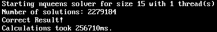

Before you start analyzing your
application target for hotspots, do the following:
Before you start analyzing your
application target for hotspots, do the following:
Get Software Tools
You need the following tools to try tutorial steps yourself using the nqueens_fortran sample application:
Intel® VTune™ Amplifier, including sample applications
.tgz file extraction utility
Supported Fortran compiler (see Release Notes for more information)
Acquire Intel VTune Amplifier
If you do not already have access to the VTune Amplifier, you can download an evaluation copy from http://software.intel.com/en-us/articles/intel-software-evaluation-center/.
Install and Set Up VTune Amplifier Sample Applications
- Copy the
nqueens_fortran.tgz file from the
<install-dir>/samples/<locale>/Fortran
directory to a writable directory or share on your system.
Note
The default installation path for the VTune Amplifier XE is /opt/intel/vtune_amplifier_xe_version. For the VTune Amplifier for Systems, the default <install_dir> is:
- For super-users: /opt/intel/system_studio_version/vtune_amplifier_for_systems
- For ordinary users: $HOME/intel/system_studio_version/vtune_amplifier_for_systems
- Extract the sample from the tgz file.
Note
- Samples are non-deterministic. Your screens may vary from the screen captures shown throughout this tutorial.
- Samples are designed only to illustrate the VTune Amplifier features; they do not represent best practices for creating code.
Build the Target in the Release Mode
Build the target in the Release mode with full optimizations, which is recommended for performance analysis. For this tutorial, Intel® Fortran Compiler is used to build the application.
Browse to the directory where you extracted the sample code (for example, /home/fortran/linux). Make sure this directory contains Makefile.
Clean up all the previous builds as follows:
$ make clean
Build your target in the release mode as follows:
$ make
The nqueens_parallel application is built.
Create a Performance Baseline
Run the application to create a performance baseline that will be used to identify optimization you achieve during performance tuning with the VTune Amplifier.
Note
Before you start the application, minimize the amount of other software running on your computer to get more accurate results.
Run nqueens_parallel with the task size of 15. For example:
$ ./nqueens_parallel 15

Note the execution time displayed in the shell window caption. In the example above, the execution time is 256710 milliseconds.
Note
Run the application several times, note the execution time for each run, and use the average number. This helps to minimize skewed results due to transient system activity.
The screenshots and execution time data provided in this tutorial are created on a system with 4 CPU cores. Your data may vary depending on the number and type of CPU cores on your system.
Create a VTune Amplifier Project
Set the EDITOR or VISUAL environment variable to associate your source files with the code editor (like emacs, vi, vim, gedit, and so on). For example:
$ export EDITOR=gedit
Run the amplxe-gui script launching the VTune Amplifier GUI.
Create a new project via New > Project....
Specify the project name nqueens that will be used as the project directory name and click Create Project.
VTune Amplifier creates the tachyon project directory under the $HOME/intel/amplxe/projects (for VTune Amplifier XE) or $HOME/intel/amplsys/projects (for VTune Amplifier for Systems) directory and opens the Choose Target and Analysis Type window with the Analysis Target tab active.
From the left pane, select the local target system from the Accessible Targets group. From the right pane select the Launch Application target type.
Specify and configure your target as follows:
For the Application field, browse to: <sample_code_dir>, for example: /home/vtune/nqueens_fortran/linux/nqueens_parallel.
In the Application parameters field, specify the task size for this target: 15.
Click Choose Analysis to select an analysis type.
Recap
You built the target in the Release mode, created the performance baseline, and created the VTune Amplifier project for your analysis target. Your application is ready for analysis.
Next Step
Optimization Notice |
|---|
Intel's compilers may or may not optimize to the same degree for non-Intel microprocessors for optimizations that are not unique to Intel microprocessors. These optimizations include SSE2, SSE3, and SSSE3 instruction sets and other optimizations. Intel does not guarantee the availability, functionality, or effectiveness of any optimization on microprocessors not manufactured by Intel. Microprocessor-dependent optimizations in this product are intended for use with Intel microprocessors. Certain optimizations not specific to Intel microarchitecture are reserved for Intel microprocessors. Please refer to the applicable product User and Reference Guides for more information regarding the specific instruction sets covered by this notice. Notice revision #20110804 |